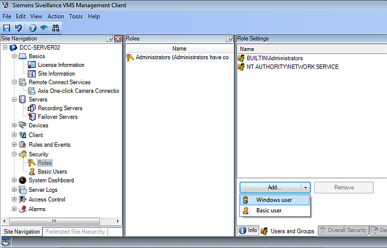
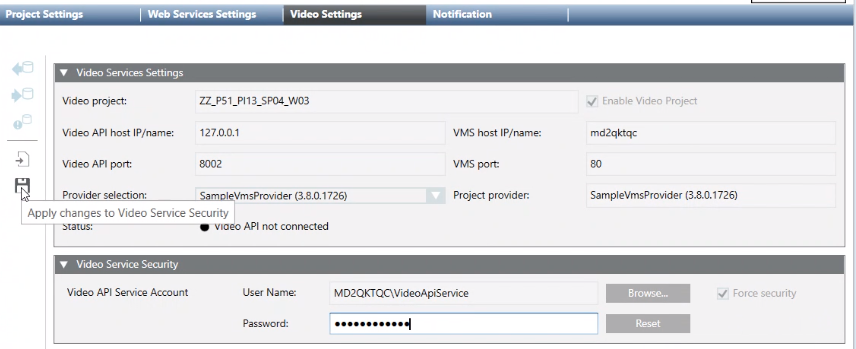
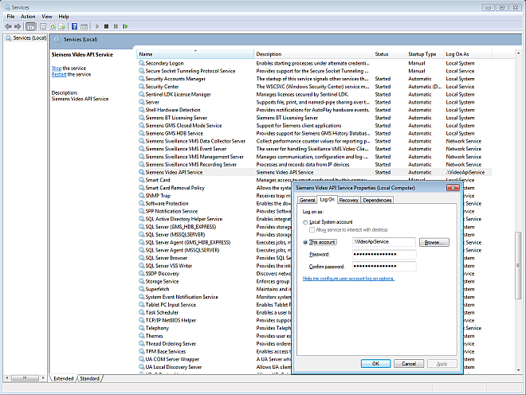
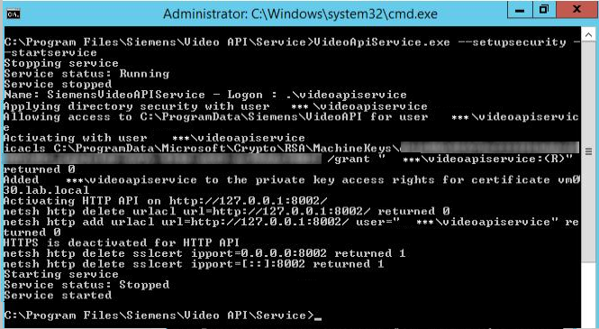

Configuring the VideoApiService Account
By default, the BT Video API service runs on the Desigo CC server as an anonymous Windows Network Service. For security reasons, you must make it instead run as a named account.
This task is performed within step 3: Set up User Accounts and Networking of the main video integration workflow.
Prerequisites
- The VMS server is installed.
- The Video extension is installed.
1 - Create the VideoApiService Account in Windows
On the Desigo CC server computer, you need to create a VideoApiService user account in Windows. Depending on the deployment scenario, this task is performed in the following ways:
- If the VMS server runs on the same computer as the Desigo CC server: create a VideoApiService local account on the shared computer.
- If VMS server runs on a separate computer from the Desigo CC server:
- On a Windows domain, create a domain VideoApiService account, which can be used on all the computers of the domain.
- On a Windows workgroup, create the same VideoApiService account as local user on the Desigo CC server and on the VMS server. Use the same user name and password on both computers. If a password change is done later (for example due to enforcement of a password policy), the change must be done consistently on both computers.
In any case, for more information about creating a new Windows user account, refer to the Microsoft documentation and online help.
For troubleshooting information about the Video Api service, see Video Troubleshooting.
NOTICE

VideoAPIService account security
 For security reasons, the VideoApiService account should not be a member of the Windows Administrators group.
For security reasons, the VideoApiService account should not be a member of the Windows Administrators group.
Whenever possible, for the VideoApiService account, use a Windows user account in combination with Active Directory (AD).
This makes it possible to enforce:
- A password policy that requires users to change their password regularly
- Brute force protection, so that the Windows AD account is blocked after a number of failed authentication attempts
- Role-based permissions, so you can apply access controls across your domain
2 - Set Log on as a Service Right for the VideoApiService Account
The VideoApiService account must have the Log on as a service right in Windows. To check or configure this:
- In the MMC Local Security Policy Console, expand the Security Policy Settings tree.
- Under Local Policies, select User Rights Assignment.
- In the Policy pane, right-click Log on as a service and select Properties.
- The dialog box shows a list of all the users or groups that have the 'Log on as a service' right.
- If the VideoApiService account is not listed, click Add User or Group to assign the account this right.
- Click OK.
3 – Assign Administrator Role in the VMS
- Start the VMS Management Client.
- In the Site Navigation tree, select Security > Roles.
- In the Roles pane, select Administrators.
- In the Role Settings pane, at the bottom, select the Users and Groups tab.
- Select Add.. > Windows User.
- In the Select Users or Groups dialog box, click Advanced.
- In the Advanced dialog box, click Find Now, select the VideoApiService user account in the list, and click OK.
NOTE: If the VideoApiService user account does not appear in the list (the list might not include very recent updates), click Cancel to close the Advanced dialog box and proceed as follows:
a. Type VideoApiService in the Enter the object name to select field.
b. Click Check Names to show the full account name.
c. Click OK.
- The VideoApiService user account appears in the Roles Settings list as VMS administrator.

4 - Associate the Video API Service to the Account and Set Security
The final step is to associate the above-configured account to the Video API service and to complete its security configuration. This can be done as follows in SMC.
- In the SMC tree, select Projects > [video project].
- Select the Video Settings tab.
- Open the Video Service Security expander.
- If no named account has been associated yet, the User Name field next to Video API Service Account will show NT AUTHORITY\Network service colored in red. Otherwise it will show the currently associated named account.

- To associate a named account and apply security settings to it:
- Click Browse... , select the VideoApiService account configured in the preceding steps, and click OK.
- In the Password field that appears, enter the password for the VideoApiService account.
- The Force security check box is automatically selected, meaning the required security settings will be applied to this account.
NOTE: If you have made a mistake, you can click Reset to cancel your selection and revert to the previous account. - To keep the currently associated account, but only apply security settings to it.
(You may need to do this, for example, if the account was manually associated previously, but the security settings were not applied): - Leave the User Name field as it is.
- Select the Force security check box.
- Click
 Apply changes to Video Service Security.
Apply changes to Video Service Security.
- The changes to the Video API Service account are applied.
- The outcome of the security settings is output to the file GMSMainProject\Log\Smc.log.

The Video API Account is a system-wide Windows setting on the Desigo CC server computer. The configuration set here will therefore also apply to any other Desigo CC projects with video on the same computer, since all projects use the same Video API service.
Appendix: Manual procedures (Alternatives to Step 4)
The below procedures are no longer required because the same actions are performed by step 4 of the workflow in SMC. They are provided here only for reference.
Manually Associate the Video API Service to the Account
- You created a VideoApiService user account with log-on as a service rights and Administrator role in VMS, as in steps 1-3 of the above workflow.
- In Windows, on the Desigo CC server computer, do one of the following to start the Services console:
- Click Start > Control Panel > Administrative Tools > Services
or - From Start > Run... launch services.msc.
- In the service list, locate the Siemens Video API Service.
- Right-click the Siemens Video API Service and select Properties.
- In the Properties dialog box, select the Log On tab.
- Under Log On as: select This account and click Browse.
- In the Select User dialog box, click Advanced.
- In the new Select User dialog box, click Find Now.
- In the Search results list, select VideoApiService and click OK twice.
- Enter and confirm the password of the VideoApiService account.
- Click OK and close the Services tool.
NOTE: It is necessary to apply the required security settings to the account. See RunVideoApiService.exe from the Command Prompt, below.

Run VideoApiService.exe from a command prompt
As a final step, it is necessary to run a command-line tool to complete the security settings for the VideoApiService account. Perform these steps on the Desigo CC server computer.
- Open an elevated command prompt. You can do this as follows:
- From the Windows Start menu, search for "command".
- Right click the Command Prompt search result and choose Run as administrator.
- The Administrator: Command Prompt window opens.
- In the Administrator: Command Prompt window, do the following:
- Type cd C:\Program Files\Siemens\Video API\Service and press RETURN.
- Type VideoApiService.exe --setupsecurity --startservice and press RETURN.
- The command begins executing, and its outcomes display in the window.
- When the command finishes, check that it was successfully executed. Its outcomes should match those shown below, where
***stands for the machine name. 
- Close the command prompt window.